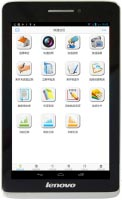
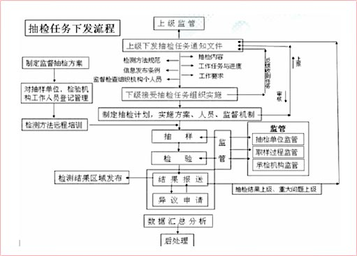

系统特点
- 移动办公便捷：通过终端实现移动监督执法办公，记录日常事务，接收监测任务、通知，查看历史数据等，有无网络都可办公，一PAD在手，说走就走。
- 操作简单：图形界面，指尖控制，监督执法指点间完成。系统自动同步云平台，数据流转、共享、存储、打印一键完成。
- 专业执法，权威规范：执法对象包括食品、餐饮服务、保健食品、化妆品、药品、医疗器械，广告行业，根据被监管单位的类型，自动生成监督检查项，并自动生成规范用语。执法时只要勾选违法违规项，自动关联相应法律法规标准，自动生成相应处理文书内容。文书编辑所见即所得。可附带录音录像拍照证据，现场打印、出征。
- 有法可依：系统实时同步云平台8大类与食品药品监督相关的法律法规标准文件库，可精确到具体的执法项、具体的视频、违法违规类型种类。系统智能判断匹配调取并关联法律法规，执法有礼有节。
- 内置GIS地图，执法时自动定位并记录被监管单位的位置，可监控执法行为是否违规，执法数据是否真实有效，可统计被监管单位的分布情况，可分析视频安全分布走势，借助移动平板，统计信息一目了然。
- 安全执法：配置便携A4文书打印，公章水印彩色打印。在公章打印使用上，实现一印已授权，一记录一上报。公章打印安全有保障。
核心功能
- 现场检测：
此功能主要是记录和存储移动执法人员的现场检测数据，并对检测数据进行管理和查询。

- 动态监管
动态监督主要是对监督单位的食品安全监督动态等级现场执法评定，填写评级表上报并存档，主要业务包括餐饮服务、保健食品、化妆品、药品、医疗器械等。
系统默认调取后台监督单位名称、地址、法定代表人、电话、许可证号、许可类别等。填写好后评定表保存或者打印，然后全部上报。
监督记录查询：可以按照省市县乡镇监测单位、上传日期、被执法单位查询。 - 现场出证
执法人员对执法对象进行抽查或者巡检，在此过程中若发现违法违规行为，执法人员可现场录音、录像、拍照取证并依照国家标准及相关的法律法规来对执法对象现场出具并打印执法文书。 - 许可审核
监督执法人员对五类业务的经营企业的许可条件的现场核查，统计汇总出与许可范围、条件等不 合格向、关键项、重点项及一般项目并量化成表。最终审查结论为“合格”，“不合格”。
-

- 日常巡检
监督执法人员对餐饮服务、保健食品、化妆品、药品、医疗器械等五类经营企业的日常监督检查与量化。 - 抽检任务管理
- 库文件管理
独一无二的法律法规库文件，能精确到某一产品所要遵循的标准查询。独一无二的食品安全监测方法库，无论是通过产品还是通过检测项目都能准确的为企业和监督执法人员提供了科学的监测手段。
客户收益
- 系统上线投入使用后，办公人员只要通过联想乐Pad，就可以随时查看公文、移动监督执法、现场检测、现场打印执法文书、发送邮件等，极大提高了办公效率！
- 通过联想乐Pad平板电脑，弥补了传统IT系统的在时间、空间上的业务限制。并且随着业务发展，用户可以基于移动终端设计业务模式及流程，让客户有了更灵活、更高效、更加符合快速响应业务流程及要求的可能性！
- 基于服务器的云平台，实现抽检任务下发、集信息采集、信息查询、数据共享、统计、分析、监督、监管的一个综合性服务器云平台。易用的平移任何PC端应用至移动终端乐Pad，解决了用户的后顾之忧及成本投入！

联想移动互联解决方案
联想移动互联解决方案以最终用户的体验为出发点，借助移动互联、大数据分析、云计算等创新技术，通过业务流程的再造，实现了企业资源的合理规划和高效运转。
联想在移动互联领域，通过梳理客户业务流程，整合行业专业应用软件，针对客户的行业特质以及业务需求进行深度定制，目前已储备超过200余项专业解决方案。更多解决方案以及产品、案例、咨询信息，请通过以下入口进入（ID:Lenovomia）：